Documentacion de las frutas
Las frutas son, quizás, los alimentos más llamativos por su diversidad de colores y formas. Pero además de lo que muestran a simple vista, forman parte de los alimentos con mayor cantidad de nutrientes y sustancias naturales altamente beneficiosas para la salud.
Si nos detenemos a pensar, veremos que las frutas y todos los vegetales, sobreviven a la intemperie, enfrentando todo tipo de condiciones y agresiones meteorológicas.
Todo ello es posible gracias a las sustancias protectoras y antioxidantes naturales que poseen. En definitiva esas mismas sustancias son las que nos protegen cuando consumimos el alimento.
Es decir que nos beneficiamos absolutamente con todas esas vitaminas y nutrientes que la fruta posee. Llenamos de vida todo nuestro organismo.

Marcela Juarez Hernandez
frutas bayas
Marcela Juarez Hernandez
ARANDANO
El arándano es una planta. La fruta madura seca y las hojas secas se utilizan para hacer los medicamentos.
El arándano se usa para mejorar la vista, incluyendo la visión nocturna. De hecho, durante la Segunda Guerra Mundial, los pilotos Británicos en la Fuerza Aérea Real comían mermelada de arándano para mejorar su visión nocturna pero investigaciones posteriores demostraron que probablemente eso no les sirvió de ayuda. El arándano se usa también para el tratamiento de afecciones oculares tales como las cataratas y trastornos de la retina.
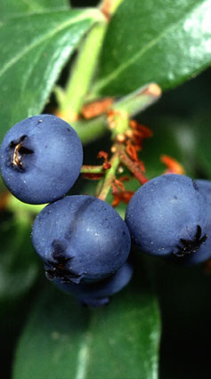
Marcela Juarez Hernandez
FRAMBUESA
La frambuesa, conocida también como fresa del bosque, es un hermoso fruto del frambueso o sangüeso, planta que crece silvestre en todos los países de clima templado. Es una fruta que aporta una cantidad destacable de fibra, que mejora el tránsito intestinal. Constituye una buena fuente de vitamina C, ácido cítrico y ácido elágico, flavonoides y folatos, minerales como el potasio, el magnesio y el calcio, este último de peor aprovechamiento que el que procede de los lácteos u otros alimentos que son buena fuente de dicho mineral.
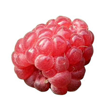
Marcela Juarez Hernandez
FRESA
llamado comúnmente fresa o frutilla, es un género de plantas rastreras estoloniferas de la familia Rosácea. Se emplea como planta medicinal, con las siguientes propiedades.
• Diuréticas y antirreumáticas: tres a cuatro tazas diarias de la infusión de las hojas y las raíces nos ayudan contra el ácido úrico, gota y artritis.
• Anti colesterol: la gran cantidad de ácido ascórbico, así como de lecitina y pectina contenida en sus frutos, la hacen ideal para disminuir el nivel de colesterol de la sangre.
• Antiinflamatorias: una infusión de las hojas es beneficiosa para las inflamaciones del intestino. La cocción de las raíces ayuda a disminuir las inflamaciones artríticas.
• Astringentes: beber tres a cuatro tazas diarias de la cocción de sus hojas es útil contra la diarrea. Las infusiones de hojas secas son muy astringentes y pueden utilizarse para curar las llagas de la boca.
Marcela Juarez Hernandez
GROSELLA ESPINOSA
La grosella espinosa o también denominada agrazón o uva espina es una baya que según la especie puede ser blanca, amarilla, roja o verde, con una piel espinosa, vellosa o suave. Las grosellas ofrecen muchos efectos positivos para nuestro organismo, pero se pueden apreciar diferencias en las propiedades de cada tipo de baya. Se pueden incluir en dietas de adelgazamiento por su escaso aporte calórico. (37-40 kcal).
La grosella espinosa es un laxante ligero y posee también efecto diurético. Su consumo se recomienda en casos de estrenimiento y trastornos de motilidad intestinal. Conviene consumir productos bien maduros o hechos puré. Posee un alto contenido en ácido cítrico y pectina.
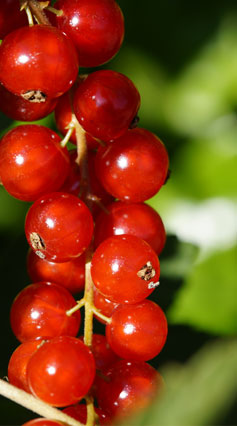
Marcela Juarez Hernandez
GROSELLA NEGRA
La grosella negra es una baya de pulpa translúcida con tonos rojos o verdes y de sabor agridulce. El fruto es pequeno, de color azul negro y esférico con un sabor intenso cuando está completamente maduro. Esta baya está recubierta de vello y su pulpa contiene muchas semillas pequenas. Estos frutos no son sueltos sino que crecen en racimos.
Las grosellas ofrecen muchos efectos positivos para nuestro organismo, pero se pueden apreciar diferencias en las propiedades de cada tipo de baya. Se pueden incluir en dietas de adelgazamiento por su escaso aporte calórico; 29,25 kcal por cada 100 gramos de grosellas.
La grosella negra posee un gran contenido de potasio y por su efecto diurético se puede recomendar en casos de hipertensión.

Marcela Juarez Hernandez
GROSELLA ROJA
Las grosellas rojas son unas pequenas frutas redondas de color rojo. Aunque se pueden consumir crudas, su sabor agridulce las hace indicadas para la elaboración de mermeladas, batidos, helados, etc. Son ricas en vitaminas y minerales. Las grosellas son frutas diuréticas indicadas en caso de hipertensión. Además previenen catarros y enfermedades gastrointestinales.
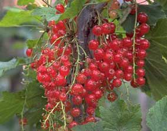
Marcela Juarez Hernandez
ZARZAMORA
La zarzamora es una planta generalmente silvestre de la que se aprovechan sus frutos, unas bayas pequenas de color negro muy aromáticas y algo ácidas. Se consumen crudas, aunque también se emplean en la elaboración de compotas, macedonias, tartas, etc. Son ricas en vitaminas y minerales. Además aportan fibra y contienen pocas calorías.
A la zarzamora se le atribuyen muchas propiedades curativas. Se pueden usar sus frutos, sus hojas y los brotes tiernos. Combate diversas afecciones como la diabetes, las anginas o las úlceras.

Marcela Juarez Hernandez
frutos citricos
Marcela Juarez Hernandez
LIMON
El jugo de limón es efectivo para quitar manchas de óxido, de tinta y de moho. También se usa para darle sabor a las comidas y para quitar malos olores. El limón es un buen aliado en rutinas de belleza. Es un efectivo astringente para el cutis, para reducir poros abiertos. Para cabellos de colores claros, el jugo de limón puede hacerlos rubios. También borra las pecas, las manchas por la edad y otras manchas del cutis. Otro beneficio del limón para la piel es que es un buen remedio natural para combatir el acné.

Marcela Juarez Hernandez
MANDARINA
La mandarina es un fruto similar a la naranja pero más pequena y achatada por su base. Su corteza es lisa, brillante color rojo anaranjado y es muy fácil de pelar, incluso con las manos. La mandarina se consume principalmente como fruta en fresco, aunque también son conocidas las conservas de gajos de mandarinas. La mandarina es adecuada para tratar las úlceras, la vesícula, es buena para la fiebre, la anorexia, la tos y la intoxicación etílica. Las personas con llagas bucales o cuyas defecaciones sean secas deben abstenerse de consumir mandarina.

Marcela Juarez Hernandez
NARANJA
La naranja es el fruto del naranjo dulce, árbol que pertenece al género Citrus de la familia de las Rutáceas. Esta familia comprende más de 1.600 especies. El género botánico Citrus es el más importante de la familia, y consta de unas 20 especies con frutos comestibles todos ellos muy abundantes en vitamina C, flavonoides y aceites esenciales. Los frutos, llamados hespérides, tienen la particularidad de que su pulpa está formada por numerosas vesículas llenas de jugo. De su composición nutritiva, destaca su escaso valor energético, gracias a su elevado contenido en agua y su riqueza de vitamina C, ácido fólico y minerales como el potasio, el magnesio y calcio. Este último apenas se absorbe por el organismo. Contiene cantidades apreciables de beta-caroteno, responsable de su color típico y conocido por sus propiedades antioxidantes; además de los ácidos málico, oxálico, tartárico y cítrico, esta última potencia la acción de la vitamina C. La cantidad de fibra es apreciable y ésta se encuentra sobre todo en la parte blanca entre la pulpa y la corteza, por lo que su consumo favorece el tránsito intestinal.
Marcela Juarez Hernandez
POMELO
El pomelo, también conocido como toronja o pampelmusa, es el fruto del árbol homónimo que pertenece al género Citrus de la familia de las Rutáceas. Esta familia comprende más de 1.600 especies. El género botánico Citrus es el más importante de la familia, y consta de unas 20 especies con frutos comestibles todos ellos muy abundantes en vitamina C, flavonoides y aceites esenciales. Los frutos, llamados hespérides, tienen la particularidad de que su pulpa está formada por numerosas vesículas llenas de jugo. El agua es el principal componente de este cítrico, por lo que el pomelo posee un escaso valor calórico, a expensas básicamente de los hidratos de carbono. En cuanto a las vitaminas, destaca por su riqueza en vitamina C y ácido fólico. El contenido en carotenoides, pigmentos que confieren a los vegetales el color anaranjado-rojizo, no es significativo salvo en las variedades de pulpa de color oscuro, con independencia del color de la piel. Respecto al contenido mineral, destacan el potasio y el magnesio. Abundan en el pomelo los ácidos málico, oxálico, tartárico y cítrico, éste último potencia la acción de la vitamina C; responsables de su sabor y de los que dependen diversas propiedades que se le atribuyen al pomelo. La cantidad de fibra no es representativa y ésta se encuentra sobre todo en la parte blanca entre la pulpa y la corteza, por lo que su consumo favorece el tránsito intestinal.
Marcela Juarez Hernandez
frutas cucarbitaceas
Marcela Juarez Hernandez
MELON
propiedades del melón
Sin ninguna duda, pocos son los alimentos que pueden igualar su bajo contenido en calorías, ya que además de esta cuestión principal, se trata de una fruta que tiene un 90% de agua en su composición.
Por este motivo, y tal y como venimos indicando a lo largo de este artículo, tiene una capacidad refrescante tal que lo convierte en un sustituto ideal de bebidas gaseosas.
Entre los beneficios que contiene, podemos destacar la vitamina A, que como sabemos ayuda a las personas que sufren de sequedad en las mucosas y en la piel.
También cuenta con vitamina E, una sustancia sumamente antioxidante y protectora que ayuda a prevenir el cáncer y la aparición de enfermedades cardiovasculares.
Actúa como laxante, diurético (ideal para eliminar las toxinas del organismo) y ayuda a neutralizar la acidez.
Eso sí, no debemos olvidarnos tampoco de su alto contenido en beta carotenos, siempre y cuando optemos por los melones de pulpa anaranjada
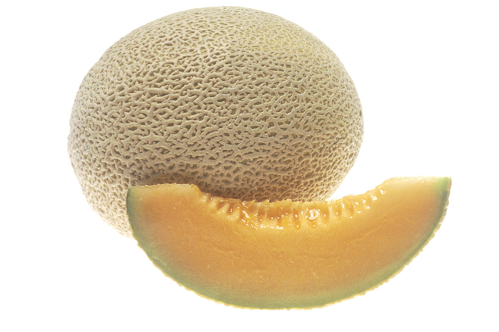
Marcela Juarez Hernandez
SANDIA
Citrullus lanatus, comúnmente llamada sandía, patilla, paitilla, aguamelón o melón de agua es una planta de la familia Cucurbitácea originaria de África, pero tiene una gran presencia y difusión en Asia. Hoy en día se cultiva de manera extendida por todo el mundo debido a su fruto, un pepónide de enorme tamano —el récord entre las frutas fue una sandía de 122 kg. El fruto contiene alrededor de 6% de azúcares y 91% de agua por peso. Es una buena fuente de vitamina C, como muchos otros frutos.
El aminoácido citrulina se extrajo primero de la sandía y analizado. Las sandías contienen una cantidad significativa de citrulina y después de consumir de varios kilogramos, se ha medido una concentración elevada en el plasma sanguíneo.

Marcela Juarez Hernandez
frutas exoticas
Marcela Juarez Hernandez
AGUACATE
Para qué sirve el aguacate
Se trata de una fruta muy popular y versátil, agrega sabor a prácticamente cualquier platillo y contiene grandes cantidades de vitaminas, minerales y grasas mono insaturadas.
• Es cierto que los aguacates proporcionan una cantidad considerable de grasas, lo destacable es que dichas grasas son grasas saludables y una buena fuente de energía.
• Una de las propiedades del aguacate es su alto contenido de grasas mono insaturadas, las cuales favorecen al metabolismo de carbohidratos, la salud de la presión arterial y evitan muchas enfermedades.
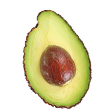
Marcela Juarez Hernandez
CARAMBOLA
La carambola es una fruta exótica muy cotizada en los mercados internacionales, conocida popularmente como "fruta estrella" o "star fruit".
Pertenece a la familia de las Oxalidáceas. Además, en función de su procedencia, recibe distintos nombres: en la República Dominicana, "cinco dedos"; en Costa Rica, "tiriguro"; en Brasil, "caramboleiro" y en Venezuela, "tamarindo chino" o "tamarindo dulce". Es una fruta con una forma muy bonita, de gran empleo en la decoración de diversos platos exquisitos.
Su componente mayoritario es el agua. Contiene pequenas cantidades de hidratos de carbono simples y aún menores de proteínas y grasas, por lo que su valor calórico es muy bajo.
La pulpa de la carambola es rica en oxalato de calcio y fibra soluble.
Contiene una cantidad moderada de provitamina A y de vitamina C.
En cuanto a minerales, destaca su contenido en potasio.
La provitamina A o beta caroteno se transforma en vitamina A en nuestro organismo conforme éste lo necesita. Dicha vitamina es esencial para la visión, el buen estado de la piel, el cabello, las mucosas, los huesos y para el buen funcionamiento del sistema inmunológico. La vitamina C interviene en la formación de colágeno, huesos y dientes, glóbulos rojos y favorece la absorción del hierro de los alimentos y la resistencia a las infecciones. Ambas vitaminas, cumplen además una función antioxidante.
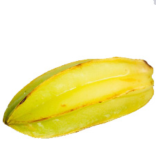
Marcela Juarez Hernandez
COCO
El coco es una fruta tropical obtenida del cocotero (Cocos nucifera), la palmera más cultivada a nivel mundial. Tiene una cáscara exterior gruesa (Exocarpio) y un mesocarpio fibroso y otra interior dura, vellosa y marrón (endocarpio) que tiene adherida la pulpa (endospermo), que es blanca y aromática. Mide de 20 a 30 cm y llega a pesar 2,5 kg. La composición del coco varía a medida que este madura. La grasa constituye el principal componente tras el agua y es rica en ácidos grasos saturados (88,6% del total), por lo que su valor calórico es el más alto de todas las frutas. Aporta una baja cantidad de hidratos de carbono y menor aún de proteínas. Así mismo, el coco es rico en sales minerales que participan en la mineralización de los huesos (magnesio, fósforo, calcio) y en potasio. En cuanto a otros nutrientes, destaca su aporte de fibra, que mejora el tránsito intestinal y contribuye a reducir el riesgo de ciertas alteraciones y enfermedades. El magnesio se relaciona con el funcionamiento de intestino, nervios y músculos, forma parte de huesos y dientes, mejora la inmunidad y posee un suave efecto laxante. El fósforo participa en el metabolismo energético. El potasio es necesario para la transmisión y generación del impulso nervioso, para la actividad muscular normal e interviene en el equilibrio de agua dentro y fuera de la célula. Destaca además su contenido de vitamina E, de acción antioxidante y de ciertas vitaminas hidrosolubles del grupo B, necesarias para el buen funcionamiento de nuestro organismo.
El coco es un fruto muy aromático y de sabor intenso y agradable. Teniendo en cuenta sus propiedades nutritivas, su consumo ocasional y en cantidades moderadas, se considera adecuado para todos los segmentos de la población sana: ninos, jóvenes, adultos, deportistas, mujeres embarazadas, madres lactantes y personas mayores.
El coco es una fruta que enriquece nuestra alimentación en sustancias nutritivas, sabores, aromas y en gran cantidad de platos de nuestra gastronomía.
Marcela Juarez Hernandez
CHIRIMOYA
Beneficios de la chirimoya
Como la mayoría de las frutas (salvo el coco o el aguacate), es un alimento ideal en dietas de adelgazamiento, gracias sobre todo a su bajo contenido en grasas.
Es muy rica en agua e hidratos de carbono, y destaca principalmente por sus importantes valores nutricionales: aporta una gran variedad de minerales y vitaminas del grupo B.
Además, al ser muy rica en vitamina C es útil a la hora de aumentar las defensas y a mantener en unos niveles óptimos los niveles de defensa inmunitaria e inmunológica de nuestro organismo.
Si te ha gustado esta nota y te interesa conocer más sobre el aporta nutricional de las frutas, te aconsejamos que sigas leyendo sobre los beneficios de las frutas
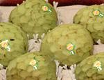
Marcela Juarez Hernandez
DATIL
El dátil es una fruta obtenida de la palmera datilera (Phoenix dactylifera), alimento básico para países del Magreb. La fruta es considerada edulcorante por su cantidad de azúcar aproximadamente el 70%. Su nombre es derivado de la palabra griega δακτύλος ("daktilos"), que significa "dedo".
Los mayores productores a nivel mundial han sido Irán e Irak (hasta la Guerra del Golfo). En California existe un importante cultivo de este fruto. Existen muchas variedades, entre ellas: Zahid, Medjool, Kadrawi, la más apreciada es la Deglet Nour.
Era considerada beneficiosa en medicina. En naturopatía se prescribe su uso en caso de asma, bronquitis, tuberculosis, tos, fiebres, cáncer, dolor de estómago, catarro, fatiga a los ojos, gonorrea. Es un excelente producto, como fruto bien maduro y hervido en leche ablanda y suaviza las vías respiratorias. Se puede comer como fruto o preparado en mermeladas, púdines, tortas, helados, etc.
Por su alto contenido de azúcar se considera energético y afrodisiaco.

Marcela Juarez Hernandez
FRUTA DE LA PASION
La pasionaria es una enredadera trepadora; puede alcanzar los 9 metros de longitud en condiciones climáticas favorables, aunque su período de vida no supera por lo general la década. Su tallo es rígido y lenoso; presenta hojas alternas de gran tamano, perennes, lisas y de color verde oscuro. Una misma planta puede presentar hojas no lobuladas cuando se empieza a desarrollar, y luego hojas trilobuladas, por el fenómeno de heterofilia foliar. Las raíces, como es habitual en las trepadoras, son superficiales. La pulpa, el zumo, las flores y la infusión de las hojas del maracuyá tienen un efecto relajante, mucho más pronunciado en el caso de la infusión, que puede utilizarse como sedante ligero o como calmante para dolores musculares o cefaleas; contiene varios alcaloides, entre ellos el harmano y el harmol.
En dosis normales — una taza o dos de infusión al día — ayuda a conciliar el sueno y puede tener además efectos antiespasmódicos; está recomendada también en caso de espasmos bronquiales o intestinales de origen nervioso, así como para los dolores menstruales.
Posee también un ligero efecto vasodilatador, pero no se recomienda su utilización regular para evitar efectos tóxicos.
La flor de determinadas especies tiene efectos ligeramente alucinógenos.

Marcela Juarez Hernandez
KIWI
El kiwi es un fruto de forma ovoide, de tamano variable y recubierto de una piel fina de color marrón, ligeramente vellosa. Puede tener de 4 a 7,5cm de longitud por 3,5 a 5cm de anchura y el peso varía de 30-150g en función de la variedad, las condiciones climáticas y del sistema de cultivo. La pulpa puede ser de color verde de distinta tonalidad según la variedad, tierna, jugosa y de sabor agridulce. Presenta numerosas y pequenas semillas negras comestibles. El color de la pulpa y el sabor delicado de la misma que recuerda en parte a la uva, a la fresa y a la pina, lo hacen muy agradable.

Marcela Juarez Hernandez
LITCHI
El lichi (Litchi chinensis) es un árbol frutal tropical originario del sur de China, donde se conoce como (pinyin: lìzhī), el sur de Indonesia y el este de Filipinas, donde se conoce como alupag. El lichi es el único representante del género Litchi de la familia de las Sapindaceae.
Descripción
El árbol es de hoja perenne y de tamano medio, alcanzando 15-20 m de altura. La fruta (que en realidad es una falsa fruta, compuesta por una cobertura carnosa llamada arilo) es una drupa que tiene 3-4 centímetros de longitud y unos 3 cm de diámetro. La parte exterior (epicarpio) es de color rojo y fácil de retirar. El mesocarpio (interior) está formado por capas de pulpa blancas, dulces y translúcidas, ricas en vitamina C con una textura similar a la de la uva. En el centro se encuentra la semilla rodeada por un duro endocarpio.

Marcela Juarez Hernandez
MANGO
El mango es una fruta con un elevado contenido en glúcidos. Su contenido en fibra no soluble es bajo, al igual que su valor calórico. El mango puede reducir el riesgo de contraer enfermedades en general por intensificar las funciones inmunológicas.
El mango es también conocido como "melocotón de los trópicos" por su anaranjado color y agradable sabor. El más fiable signo revelador de su madurez es su olor. Cuando el fruto está maduro al ser presionado con los dedos cede fácilmente.
Por su extraordinario sabor, aroma, color y textura resulta ideal para consumir solo, en macedonias, elaborar sorbetes, tartas y mermeladas, mezclar en ensaladas e incluso cocinar como condimento de carnes y pescados. En la India, el mango verde es el ingrediente básico para elaborar el tradicional chutney.
Los mangos son laxantes y altamente nutritivos. También son una importante fuente de vitamina A y algo menor de B y C.
Por cada 100 g de mango comestible aporta 60,28 kcal, 0,5 g de proteínas, 0,10 g de grasa, 15,30 g de hidratos de carbono, y 1,50 g de fibra.
Entre los minerales, destaca el hierro, pero también aporta potasio, fósforo, sodio y calcio.

Marcela Juarez Hernandez
PAPAYA
La papaya es un alimento rico en agua y bajo en calorías, que aporta minerales como calcio, fósforo y hierro y vitaminas A y C. Contiene papaína, un enzima que favorece la digestión.
La papaya es una fruta tropical de forma ovalada o aperada, que mide entre 10 y 20cm y pesa normalmente entre 500 y 1.000g, aunque puede alcanzar los 5kg. Se trata de una baya con la piel fina y de color entre el verde amarillento y el naranja. La pulpa es roja anaranjada o amarilla, dulce y muy jugosa. Dentro presenta una cavidad donde se encuentran las semillas, que son de color negro grisáceo.
De la papaya se consume tanto su pulpa como sus semillas secas. Los frutos maduros se toman generalmente como fruta fresca, en rodajas, con azúcar y zumo de lima o en ensaladas de frutas. Las papayas verdes se consumen como fruta cocida. También se elaboran diversos productos como confituras, refrescos, helados y jaleas, además de hacerse conservas con ella.

Marcela Juarez Hernandez
PInA
El contenido calórico de la pina es bajo, por lo que es adecuada en dietas de adelgazamiento. Es beneficiosa para facilitar la digestión y útil para personas con gastritis o dispepsia. Es ligeramente laxante y normaliza las funciones intestinales. Se trata de una fruta que activa la función pancreática. Es rica en manganeso, el cual apenas está presente en el resto de frutas.
La pina madura tiene una fragancia muy singular. Es de hermoso color y agradable sabor agridulce. Se puede comer cruda o como ingrediente en zumos, conservas, licores, etc. Tanto el fruto como las hojas se usan en la preparación de compuestos medicinales.
La planta es herbácea y las inflorescencias nacen en lo alto. Estas inflorescencias son ovaladas. El fruto es unainfrutescencia que está formado por un conjunto de frutas. Es carnoso y termina en una corona de hojas. Se propaga por esquejes y prefiere el calor.
La pina tiene un contenido en agua muy alto. Los glúcidos ocupan el segundo lugar y el aporte de proteínas y lípidos es muy escaso. El valor calórico, teniendo en cuenta su composición es muy bajo. Cada 100 g de producto fresco comestible aportan entre 64 y 101 kcal. Por ello es muy adecuada en dietas de adelgazamiento.

Marcela Juarez Hernandez
PLATANO
El plátano o banano es una fruta amarilla, de forma alargada, que encontramos en el mercado en grupos de tres a veinte, de forma similar a un pepino triangular, oblongo y normalmente de color amarillo. Su sabor es más o menos dulce según la variedad.
Hay confusión en cuanto al nombre, en todos los países del mundo exceptuando Espana, se conoce con el nombre de plátano si se come cocinado y banano si se refiere al fruto maduro que se consume en fresco. En Espana se llama plátano al fruto que se consume en fresco y el banano prácticamente no existe. Aunque actualmente, cualquier tipo tiene diferentes usos y los plátanos pertenecen a un subgrupo de cultivares.
El consumo en fresco como postre del plátano es el más normal, incluso frito, pero además, otros plátanos, como el plátano macho, se cocinan y consumen cuando todavía están verdes. Una parte de los plátanos maduros se utiliza para producir crujientes rodajas de plátano deshidratado o harina de plátano. También en algunas zonas del Este de África los plátanos maduros se usan para elaborar una cerveza con bajo contenido en alcohol. Otros productos son el puré, zumo, licor y golosinas.
Además esta fruta es una buena fuente de energía, ya que aporta entre 88 y 95kcal/100g y es una fuente importante de vitamina A y potasio.
Se pueden distinguir algunas variedades por su diferencia de tamano, color, que puede ser verde, amarillo o rojo, sabor más o menos dulce y su forma de consumo.

Marcela Juarez Hernandez
frutas dulces
Marcela Juarez Hernandez
Albaricoque
• Prunus armeniaca, llamado comúnmente albaricoquero, es un árbol frutal originario de China (donde fue hallada la variedad originaria silvestre), Turquía, Irán, Armenia, Azerbaiyán y Siria. Es la especie más extensamente cultivada del género. El aceite de albaricoque se utiliza al igual que el aceite de almendras dulces como demulcente de la piel.
• En Indochina se usa como antiséptico en enfermedades respiratorias.
• Las semillas se usan para tratar la tos y el estrenimiento en medicina China. Tiene vitamina A, potente antioxidante, mejora también las enfermedades de los ojos.
• El amaretto es un licor bastante popular en Italia que emplea las almendras de albaricoque en su confección y de ahí su nombre ya que son de sabor amargo (amaro en italiano).7
• El albaricoque se utiliza en cosmética para la elaboración de mascarillas, para tratar las anomalías de la piel, especialmente del cutis. Es capaz de nutrir la piel de vitamina A y proporcionar numerosos minerales. Protege el cutis contra la aparición de arrugas y blanquea aquellos rostros provistos de manchas en la cara causadas por el sol o por la edad.
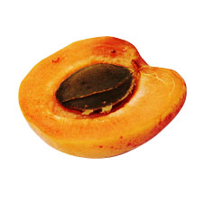
Marcela Juarez Hernandez
CEREZA
Cereza, también conocido como guinda, es el nombre del fruto de varios árboles del género Prunus, aunque comercialmente se aproveche un número limitado de especies. Al árbol se le conoce como cerezo o guindo. Si bien todos las cerezos son del género Prunus, a éste pertenecen especies que no lo son, como el ciruelo, el almendro, el albaricoquero o damasco y el melocotonero o duraznero. La cereza es una fruta rica en vitaminas A, B, C, E, K y PP, en hierro, calcio, magnesio, potasio y azufre. Las principales especies de cerezo cultivadas en el mundo son el cerezo dulce (Prunus avium), el guindo (P. cerasus) y el cerezo "Duke", híbrido de los anteriores. Ambas especies son naturales del sureste de Europa y oeste de Asia. El cerezo dulce tuvo su origen probablemente en el mar Negro y en el mar Caspio, difundiéndose después hacia Europa y Asia, llevado por los pájaros y las migraciones humanas. Fue uno de los frutales más apreciados por los griegos y con el Imperio Romano se extendió a regiones muy diversas. Los Gitanos fueron una de las culturas que rindió tributo a este fruto y esto se ve reflejado en poemas como oda a lalusof. En la actualidad, el cerezo se encuentra difundido por numerosas regiones y países del mundo con clima templado. Existen muchos tipos de cereza, pero la mayoría de ellas crecen en arbustos y árboles bajos al igual que las moras o fresas.
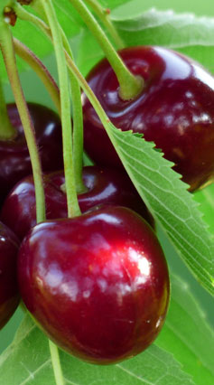
Marcela Juarez Hernandez
CIRUELA
La ciruela es la fruta del ciruelo, nombre común de varias especies arbóreas pertenecientes al subgénero Prunus. La ciruela es una drupa, es decir, un fruto carnoso con una única semilla rodeada de un endocarpio lenoso. Por su contenido en sorbitol tiene efecto laxante. Es por eso, que en algunas ocasiones no es recomendado comerlas en exceso. Algunos médicos las recomiendan para "limpiar" el estómago. También es un buen remedio para enfermedades. En Colombia, se conoce al fruto del ciruelo como "ciruela calentana", típica en la ciudad de Girardot (Cundinamarca). En el Departamento Atlántico, se celebra anualmente el Festival de la Ciruela, en el que se ofrecen todo tipo de productos a base de la fruta, como helados, dulces, conservas y vino.
En Ecuador, es propia de los alrededores de la ciudad de Ambato.
En Perú, la mayor producción se da en la costa norte del país, más propiamente en el Departamento de La Libertad. Las cosechas se dan en los meses de marzo, abril y mayo. Precisamente a finales del mes de abril se celebra anualmente el Festival de la Ciruela en la Provincia de Virú, en el que se ofrecen diferentes tipos de productos y potajes a base de la ciruela peruana (Spondias purpurea).
La variedad "Claudia", de color verde pálido y especialmente pulposa fue llamada así en honor de la reina Claudia de Francia.
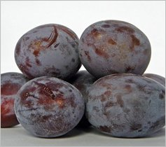
Marcela Juarez Hernandez
HIGO
El higo es un «fruto» obtenido de la higuera (Ficus carica). Desde el punto de vista botánico el higo no es un fruto sino una infrutescencia (o sea un conjunto de frutos). Existen más de 750 especies de higos diferentes entre las que hay comestibles y no comestibles. Las especies comestibles son muy digestivas porque contienen una sustancia llamada cradina que es un fermento digestivo y alto contenido en fibra mejorando el tránsito intestinal por ello también es utilizado como laxante; ácidos orgánicos como el ácido cítrico, málico y acético; sales como potasio, magnesio y calcio, y vitaminas A, B1, B2, B3 y C. Contiene un 80% de agua y altos contenidos en hidratos de carbono como la sacarosa, fructosa y glucosa. Los frutos no maduros resultan tóxicos para el estómago.
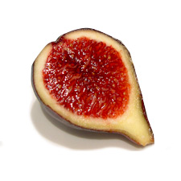
Marcela Juarez Hernandez
KAKI
Diospyros kaki, el caqui o palosanto,1 una especie arbórea de la familia de las Ebenáceas, originario de Asia. Su fruto, el caqui o pérsimo, es una baya comestible de sabor muy dulce. Es de forma generalmente redonda similar a una manzana o a un tomate, y en algunos cultivares, algo más alargado. Se puede cultivar en todas las regiones subtropicales, o sea que incluyen a todos los países mediterráneos. En cuanto a su valor nutricional, cuenta con importantes cantidades de hidratos de carbono (fructosa y glucosa), pectina y mucílagos (fibra soluble). Además, se trata de una buena fuente de vitamina A y vitamina C que también aporta potasio, hierro, magnesio y calcio y, en menor cantidad, fósforo y sodio. Beneficia la visión y el crecimiento y desarrollo de los huesos, es antioxidante y favorece el tránsito intestinal.
Escasa de grasas y proteínas y tiene alto valor calórico con respecto a otras frutas. También es un fuente de beta-caroteno y las xantófilas de luteína y zeaxantina (834 µg por 100 g).
Recientemente se han publicado los valores nutricionales relacionados con un zumo de caqui turbio estable y no astringente (González et al., 2015).
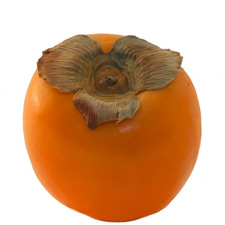
Marcela Juarez Hernandez
MANZANA
La manzana es una fruta pomácea comestible, fruto del manzano doméstico (Malus domestica), otros manzanos (especies del género Malus) o híbridos de aquel. En algunas zonas de Espana se le suele llamar pero cuando tiene forma alargada, aunque en muchas partes de Andalucía se llama indistintamente “pero” a la manzana. Uso interno:
• Antiinflamatoria del aparato digestivo: en casos de inflamación del estómago, intestinos o de las vías urinarias.
• Antiácida: su contenido en pectinas, así como la influencia de la glicina, que es un antiácido natural la hacen muy adecuada para en casos de acidez estomacal.
• Antidiarreica y laxante suave: aunque parezca contradictorio su alto contenido en pectinas la convierten en un buen regulador del aparato del intestino, de manera que se constituye un laxante suave en casos de estrenimiento, especialmente cuando se come a primeras horas de la manana. Al mismo tiempo el valor absorbente de las pectinas la hacen ideal en casos de colitis, diarrea, gastroenteritis y en todos aquellos casos en que se manifiesten heces demasiado abundantes y blandas.
• Diurético y depurativa: favorece la eliminación de líquidos corporales, siendo muy adecuada en casos de obesidad, enfermedades reumáticas Por su contenido en cistina y arginina , así como el ácido málico, resulta muy adecuada para eliminar las toxinas que se almacenan en el cuerpo y que, además de combatir o impedir las enfermedades anteriormente citadas, son muy adecuadas en afecciones como ácido úrico, gota, y el tratamiento de enfermedades relacionadas con los rinones, como los cálculos o la insuficiencia renal.
• Anticatarral: en caso de bronquitis o de tos, así como cuando se tiene el pecho cargado, es muy adecuada esta planta por sus valores expectorantes.
• Anti colesterol: la metionina, su alto contenido en fósforo y su riqueza en fibra soluble resultan fundamentales en el control del colesterol.
• Hipotensora: el valor vasodilatador de la histidina la convierten en un buen aliado para rebajar la presión sanguínea en casos de hipertensión.
• Sedante: por su contenido en fósforo, resulta un alimento con propiedades sedantes, muy adecuado para tomarlo antes de irse a dormir, con lo cual ayuda a dormir mejor.
• Antipirético: para rebajar la fiebre.
• Antitabaco: una dieta a base solo de manzanas durante todo un día puede ayudar a abandonar el hábito de fumar.
• Anticancerígena: por su contenido en cate quinas y quercetina, dos fitoquímicos que protegen contra la acción de los radicales libres y tienen propiedades anticancerígenas muy potentes.
• Enfermedad de Ménière: las curas de vinagre de manzana con agua ayudan a mejorar esta enfermedad.
• Antidiabética: estudios científicos recientes atribuyen propiedades antidiabéticas a las semillas de la manzana8

Marcela Juarez Hernandez
MELOCOTON
Prunus persica, originalmente Amygdalus persica L., el melocotonero (del Latín malus cotonus, «manzana algodonosa» - en alusión a la piel del fruto)1 así llamado en Espana peninsular y las islas Baleares, en las islas Canarias y en parte de Hispanoamérica. También se le suele denominar duraznero (del Latín durus acinus, «que tiene la piel dura» - referido a la piel del fruto) y a su fruto durazno, en países como Chile, Argentina, Uruguay, México, Perú y Venezuela. Su fruto es el melocotón o durazno. También conocido como presco o presiego (en Aragón) o piesco, contiene una única semilla encerrada en una cáscara dura, el «hueso». Esta fruta, normalmente de piel aterciopelada, posee una carne amarilla o blanquecina de sabor dulce y aroma delicado. A la variedad que no tiene la piel aterciopelada se la llama nectarina, pavía (En Aragón, Navarra) o pelón.
Los melocotones, junto con las cerezas, ciruelas y albaricoques, son frutas de hueso botánicamente llamadas drupas. Se dividen en variedades cuya carne se separa fácilmente del hueso («prescos/piescos») y en otras que se adhieren firmemente a él, como la variedad llamada «pavía». Las variedades de carne blanca (Presquillas en Aragón, diminutivo de presco) son típicamente muy dulces, con escaso gusto ácido y las más populares de países como China, Japón y sus vecinos asiáticos, mientras que las de carne amarilla, predilectas de los países europeos y norteamericanos, poseen un fondo ácido, que se paladea junto al dulzor. La piel de ambas variedades tiene tonos rojizos.
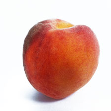
Marcela Juarez Hernandez
NECTARINA
La nectarina es un fruto redondo, con carne jugosa, con hueso, parecido al melocotón. Su piel no es vellosa sino lisa como la de la ciruela y se puede consumir sin pelar o pelado. La época de recolección de la nectarina es durante el mes de mayo en el Hemisferio Norte, aunque se puede encontrar en los mercados durante todo al ano ya que se cultiva en muchos países del mundo.
La nectarina es una de las frutas carnosas que mayor contenido en vitamina B3 posee. Esta vitamina participa en el metabolismo de los nutrientes, potenciando la degradación del colesterol y por tanto, ayuda a reducir el nivel en la sangre.

Marcela Juarez Hernandez
NISPERO
El Níspero (Achras zapota), también conocida como zapote, chicle y zapotillo, es una planta originaria de las zonas subtropicales de América Centras y América Central, la cual pararía a Filipinas por medio de los colonizadores espanoles y luego a Extremo Oriente. En la actualidad esta especie, junto a la Eriobotrya japónica son las variedades de níspero más conocidas, siendo esta última quién ocuparía el lugar de la Mespilus germánica, también conocida como Níspero europeo. A nivel digestivo : Desde hace muchos anos la decocción de la corteza ha demostrado que posee grandes cualidades tónicas generales, así como también es beneficiosa para controlar diarreas, y debido a su acción febrífuga es utilizada para disminuir la fiebre .
Otros usos: Posee excelentes cualidades como diurético, por lo cual se recomienda moler 5 o 6 semillas y mezclarlas con agua y miel de abejas, pero no se recomienda tomar en exceso, pues más de 10 semillas pueden ocasionar un efecto vomitivo. La infusión de las hojas ejerce un efecto positivo en el control de la hipertensión .
En el pasado se utilizaba la resina de esta planta para fabricar chicle o goma de mascar
Beneficios a nivel digestivo, cardiovascular y respiratorio.
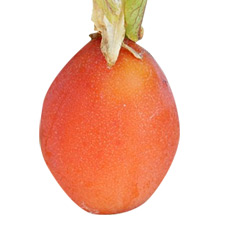
Marcela Juarez Hernandez
PERA
Se denomina pera al fruto de distintas especies del género Pyrus, integrado por árboles caducifolios conocidos comúnmente como perales. Sin embargo, cuando se trata del fruto comestible, se hace referencia mayormente al producido por el llamado peral común (Pyrus communis). La pera es una fruta jugosa, carnosa, y una de las más importantes producidas en las regiones templadas. El principal uso del fruto es gastronómico, se emplea frecuentemente como fruta de postre y en la industria conservera para elaborar compotas y mermeladas. En Europa se emplea la pera en la elaboración de perada (sidra de pera), muy popular en Gran Bretana particularmente en el oeste y Gales. En Francia especialmente en Normandía y Anjou.
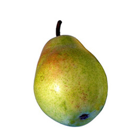
Marcela Juarez Hernandez
UVA
La uva es una fruta obtenida de la vid. Las uvas vienen en racimos y son pequenas y dulces. Se comen frescas o se utilizan para producir agraz, mosto, vino y vinagre. Las uvas ofrecen una combinación de dulzura y textura, su sabor agridulce las han hecho una popular elección como un alimento entre comidas que además resultan muy refrescantes. Y aunque son pequenas, las uvas ofrecen muy diversas propiedades excelentes para la salud.
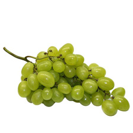
Marcela Juarez Hernandez
frutos secos
Marcela Juarez Hernandez
ALMENDRA
La almendra es el fruto del almendro (Prunus dulcis). Posee una película de color canela que la envuelve, además de una cáscara exterior que no es comestible, cuando tiene un color rosado amarillento, y es de sabor dulce y que representa un peso importante de la almendra, por la cual la parte comestible de este fruto se reduce a un 40%.2Cada 100 g de almendra común aportan un valor energético de 2409 kJ o 575 kcal, además de las respectivas dosis de vitaminas B1 o tiamina (0,211 mg), B2 o riboflavina (1,014 mg), B3 o niacina (3,385 mg), B5 o ácido pantoténico (0,469 mg), B6 (0,143 mg), B9 o folato (50 μg) y una importante cantidad de vitamina E (26,22 mg).2
También es valioso el aporte de minerales esenciales que proveen, como el zinc, hierro, calcio, magnesio, fósforo y potasio.
Para ver todos sus valores nutricionales con mayor detalle, se puede consultar la ficha que aparece a la derecha.
Como todo fruto seco, es altamente alergénica; motivo por el cual debe evitarse su consumo en caso de alergia a la misma.

Marcela Juarez Hernandez
AVELLANA
La avellana es el fruto de tipo nuez del avellano común, Corylus avellana. Etimológicamente proviene del latín nux abellana, «fruto seco de Avella», pueblo de la provincia italiana de avellino. Tiene forma esferoidal, con un diámetro aproximado de 10 a 15 mm. Está formada por una cáscara fibrosa externa que rodea una cubierta lisa en la que se aloja la semilla. La cáscara fibrosa se seca durante la maduración. El núcleo de la semilla es comestible como fruto seco, usándose tanto en crudo como cocinado (entero o en pasta). La piel oscura que recubre la semilla tiene sabor amargo por lo que en ocasiones se retira para el consumo.
También se obtiene de la avellana un aceite de sabor fuerte y característico que es de uso alimentario.
Las avellanas se utilizan con profusión en confitería, garrapinadas o mezcladas con chocolate. Es uno de los principales ingredientes de las cremas untables de cacao o similares, como Nutella, Nocilla o Duvalín. La pasta de avellanas es uno de los principales ingredientes de los torts vieneses.
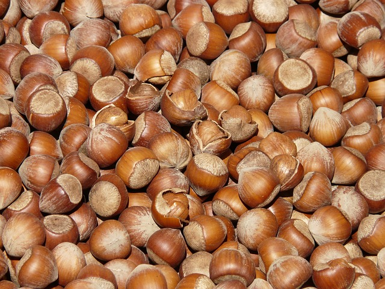
Marcela Juarez Hernandez
CACAHUATE
Siempre atentos a la alimentación saludable, hoy te daremos información sobre las propiedades nutritivas del cacahuate. Estas semillas leguminosas son ricas en vitaminas y minerales, como la niacina (o vitamina B3), que aportan a la buena salud de quienes las consumen. Entonces, conozcamos algunos de los nutrientes de los cacahuates y sus beneficios. Si buscas alimentos saludables para el corazón, debes incluir cacahuates en tu dieta. Los cacahuates son ricos en grasas mono insaturadas y en antioxidantes, componentes que ayudan a prevenir enfermedades cardiovasculares, ya que regulan los niveles de colesterol en sangre, bajando el colesterol malo y aumentando el bueno.
Antioxidantes
Según las investigaciones, los cacahuates tienen tantos antioxidantes como los arándanos y las fresas. Uno de los antioxidantes presentes en los cacahuates es el resveratrol, que parece ser importante para evitar accidentes cerebrovasculares (ACV).
Resveratrol para prevenir el cáncer
Los cacahuates tienen varios nutrientes con supuestas propiedades anticancerígenas, como el resveratrol y el ácido fólico. Por esta razón, se ha investigado sobre el consumo de cacahuates como una forma de prevenir el cáncer de colon. Según los estudios de Yeh CC y You SL, entre otros investigadores taiwaneses, consumir cacahuates al menos dos veces por semana reduce los riesgos de cáncer de colon en un 58% y 27% en mujeres y hombres respectivamente.

Marcela Juarez Hernandez
CASTAnA
La castana es el fruto del castano (Castanea sativa), árbol de la familia de las fagaceae, nativo de climas templados del hemisferio norte. El fruto es una cápsula su globosa muy espinosa (zurrón), dehiscente por 4 valvas, que mide entre 5-11 cm de diámetro y que contiene usualmente 2-3 aquenios que son las castanas propiamente dicho. Las castanas se pueden comer crudas, hervidas, asadas o dulces. En Francia es común vender un dulce de castana. Una forma sencilla de asarlas es realizar un pequeno corte en cada castana y calentarlas en un contenedor metálico a 400 ºC durante 10 o 15 minutos. El propósito del corte es evitar que estallen durante el proceso de asado.
Otro uso importante de las castanas es la harina, con ella se puede preparar pan, pasteles y pasta. En Córcega, por ejemplo, es la base de a polenta (o a polenda) -que no hay que confundir con la polenta en su sentido italiano, que es una sémola de maíz-, una gacha de harina de castana con agua, que fue, entre otros, el desayuno tradicional desde tiempos inmemoriales, y que aún es usada acompanada de queso fresco de cabra, de figatellu (una salchicha de hígado de cerdo) o de costillas de cerdo.
Las recetas gastronómicas de castanas están saliendo a relucir últimamente con la recuperación de recetas tradicionales, especialmente en Italia.

Marcela Juarez Hernandez
NUEZ
Habilidades neuronales. Anadir nueces a una dieta sana mejora el desempeno de tareas que requieren habilidades motoras o del comportamiento en personas de edad avanzada, debido a que mejora la conexión entre neuronas gracias a su contenido en poli fenoles y otros antioxidantes, tal y como probaron recientemente neurocientíficos de la Universidad de Boston (EE UU).
Corazón sano. Seguir una dieta mediterránea enriquecida con 30 gramos de frutos secos, al menos la mitad de ellos nueces, reduce en un 30 % el riesgo de padecer enfermedades cardiovasculares y, concretamente, disminuye en un 49 % la posibilidad de sufrir un ictus o accidente vascular cerebral, tal y como se desprende de una investigación espanola que se acaba de publicar en The New England Journal of Medicine.
Mejor humor y menos barriga. Según un estudio reciente de la Universidad de Barcelona publicado en Journal of Proteome Research, las personas con síndrome metabólico que incorporan a su dieta nueces y almendras experimentan, en un plazo de 12 semanas, un aumento importante de los niveles de serotonina. Esta sustancia que mejora la transmisión de senales nerviosas, reduce la sensación de hambre, disminuye la concentración de sustancias relacionadas con la inflamación, combate la obesidad abdominal y la hipertensión, mejora la salud cardíaca y nos pone de buen humor.
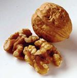
Marcela Juarez Hernandez
NUEZ PECAN, PACANA
La nuez es el fruto del nogal, de forma redondeada u ovoide, con una cáscara dura y rugosa de color pardo rojiza. La parte comestible de su interior tiene un sabor dulce particular.
En el mercado hay nueces descascarilladas, troceadas o molidas y productos elaborados con ellas.
Alimentación y nutrición
La parte comestible de la nuez recuerda por su forma al cerebro y gracias a su contenido en vitaminas del grupo B, son buenas para la memoria.
Además, reducen el riesgo de infarto, los niveles de colesterol en la sangre y pueden comerlas los hipertensos y los diabéticos.
El Fruto
La nuez es el fruto del nogal, de forma redondeada u ovoide, con una cáscara dura y rugosa de color pardo rojiza. La parte comestible de su interior tiene un sabor dulce particular.
En el mercado hay nueces descascarilladas, troceadas o molidas y productos elaborados con ellas.

Marcela Juarez Hernandez
PISTACHO
El pistacho es un fruto seco de pequeno tamano, alargado con una cáscara dura, delgada y de color marrón claro. La parte comestible es verde-amarillenta y tierna.
Se usan en productos comestibles y hasta en cosméticos, por lo que hay mucha demanda.
El pistacho es un fruto de gran categoría y es muy apreciado tanto para su consumo en fresco como para la industria.
Alimentación y nutrición
El pistacho es un fruto seco muy nutritivo y energético. Es el más rico en potasio y tiene un alto contenido en fibra.
Se recomienda a personas que realicen grandes esfuerzos físico e intelectuales.
El Fruto
El pistacho es un fruto seco de pequeno tamano, alargado con una cáscara dura, delgada y de color marrón claro. La parte comestible es verde-amarillenta y tierna.
Se usan en productos comestibles y hasta en cosméticos, por lo que hay mucha demanda.
El pistacho es un fruto de gran categoría y es muy apreciado tanto para su consumo en fresco como para la industria.
Cada vez con más frecuencia, el pistacho se consume tostado y salado con cáscara en aperitivo. La semilla en crudo se emplea como ingrediente en muchos platos, en confitería y charcutería, se elaboran helados y se obtiene un aceite de pistacho muy dulce. Incluso tienen aplicación como ingrediente de algunos medicamentos con acción digestiva y de cosméticos.
Es un fruto seco muy nutritivo de gran contenido en grasa, entre 30,5 y 51,6g por 100g de peso fresco comestible.

Marcela Juarez Hernandez